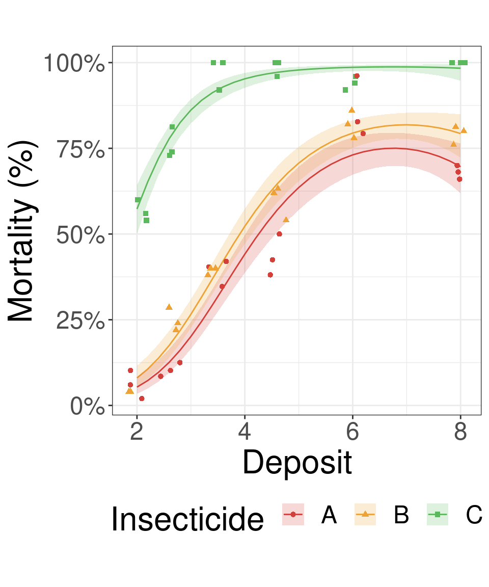

Generalized Linear Models (and more!)
Outline
What if my response does not follow a normal distribution?
Binomial Example
Count Example
Final Remarks
Generalized Linear Models (Basics)
If your data is not normally distributed, it will violate the model assumptions of a linear model. You must consider the type of data you have!
Model Scale verses Data Scale
Common Distributions
Binomial (binary data or number of successes out of total)
Poisson (count data)
Negative Binomial (count data)
Gamma (right skewed continuous data)
Beta (continuous proportion/probability)
GLMS and GLMM’s in R
Packages
Generalized Linear Model (GLM)
Generalized Linear Mixed Model (GLMM)
Binomial Example
Insects
Data The number of insects killed at various doses of insecticide.
| Rep | Killed | Number | Insecticide | Deposit |
|---|---|---|---|---|
| 1 | 3 | 50 | A | 2.00 |
| 1 | 5 | 49 | A | 2.64 |
| 1 | 19 | 47 | A | 3.48 |
| 1 | 19 | 38 | A | 4.59 |
- Killed the number of insects killed at each poison level; a numeric vector
- Number the number of insects exposed at each poison level; a numeric vector
- Insecticide the insecticide used; a factor with levels A, B and C
- Deposit the amount of deposit (insecticide) used in milligrams; a numeric vector
Insects EDA
Rep Killed Number Insecticide Deposit
1:18 Min. : 1.00 Min. :26.00 A:18 Min. :2.000
2:18 1st Qu.:17.00 1st Qu.:48.00 B:18 1st Qu.:2.640
3:18 Median :29.00 Median :50.00 C:18 Median :4.035
Mean :27.78 Mean :47.48 Mean :4.462
3rd Qu.:40.75 3rd Qu.:50.00 3rd Qu.:6.060
Max. :50.00 Max. :50.00 Max. :8.000 Insects Model
Statistical notation
\[y_{ij} \sim \text{Binomial}(\pi_{ij}, N_{ij})\] where \[\log\large(\frac{\pi_{ij}}{1-\pi_{ij}}\large) = \eta_{ij} = (\beta_0 + \tau_i) + (\beta_1 + \beta_{1i})\cdot x_{ij} + (\beta_2 + \beta_{2i})\cdot x_{ij}^2\]
\(y_{ij}\) is the number of insects killed for the \(i^{th}\) Insecticide given the \(j^{th}\) deposit.
\(N_{ij}\) is the total number of insects that started.
\(\eta\) is the overall mean on the model scale.
\(\tau_i\) is the effect of the \(i^{th}\) habitat.
\(b_j\) is the random variation due to the \(j^{th}\) site.
\(logit = \log(\frac{\pi}{1-\pi})\) data scale \(\implies\) model scale (link function)
\(\frac{1}{(1+e^{-\eta})}\) model scale \(\implies\) data scale (ilink function)
Insects GLM
insects_glm <- glm(Killed/Number ~ Insecticide*Deposit + Insecticide*I(Deposit^2),
weights = Number, #<<
data = insects_data,
family = "binomial") #<<
car::Anova(insects_glm)Analysis of Deviance Table (Type II tests)
Response: Killed/Number
LR Chisq Df Pr(>Chisq)
Insecticide 639.65 2 <2e-16 ***
Deposit 197.82 1 <2e-16 ***
I(Deposit^2) 104.08 1 <2e-16 ***
Insecticide:Deposit 0.28 2 0.8711
Insecticide:I(Deposit^2) 0.30 2 0.8612
---
Signif. codes: 0 '***' 0.001 '**' 0.01 '*' 0.05 '.' 0.1 ' ' 1Insects GLM
Call:
glm(formula = Killed/Number ~ Insecticide * Deposit + Insecticide *
I(Deposit^2), family = "binomial", data = insects_data, weights = Number)
Coefficients:
Estimate Std. Error z value Pr(>|z|)
(Intercept) -6.913880 0.687916 -10.050 < 2e-16 ***
InsecticideB 0.676798 0.911342 0.743 0.45770
InsecticideC 3.053194 1.010612 3.021 0.00252 **
Deposit 2.371302 0.287991 8.234 < 2e-16 ***
I(Deposit^2) -0.175414 0.026636 -6.586 4.53e-11 ***
InsecticideB:Deposit -0.154556 0.385324 -0.401 0.68834
InsecticideC:Deposit 0.066789 0.498966 0.134 0.89352
InsecticideB:I(Deposit^2) 0.016766 0.036163 0.464 0.64292
InsecticideC:I(Deposit^2) -0.005033 0.052369 -0.096 0.92344
---
Signif. codes: 0 '***' 0.001 '**' 0.01 '*' 0.05 '.' 0.1 ' ' 1
(Dispersion parameter for binomial family taken to be 1)
Null deviance: 1326.798 on 53 degrees of freedom
Residual deviance: 86.522 on 45 degrees of freedom
AIC: 278.27
Number of Fisher Scoring iterations: 5Insects results
| Insecticide | Deposit | prob | SE | df | asymp.LCL | asymp.UCL |
|---|---|---|---|---|---|---|
| A | 2.00 | 0.054 | 0.012 | Inf | 0.034 | 0.083 |
| B | 2.00 | 0.080 | 0.015 | Inf | 0.055 | 0.116 |
| C | 2.00 | 0.573 | 0.037 | Inf | 0.499 | 0.643 |
| A | 2.64 | 0.133 | 0.018 | Inf | 0.102 | 0.172 |
| B | 2.64 | 0.184 | 0.020 | Inf | 0.148 | 0.226 |
| C | 2.64 | 0.789 | 0.020 | Inf | 0.746 | 0.826 |
Compare Insecticides
insects_pairs <- emmeans(insects_emmeangrid, specs =~Insecticide | Deposit, type = "response")
pairs(insects_pairs, infer = c(T,T))Deposit = 2:
contrast odds.ratio SE df asymp.LCL asymp.UCL null z.ratio p.value
A / B 0.6474 0.20481 Inf 0.30846 1.3589 1 -1.374 0.3544
A / C 0.0421 0.01198 Inf 0.02165 0.0820 1 -11.141 <.0001
B / C 0.0651 0.01661 Inf 0.03580 0.1184 1 -10.707 <.0001
Deposit = 2.64:
contrast odds.ratio SE df asymp.LCL asymp.UCL null z.ratio p.value
A / B 0.6800 0.13910 Inf 0.42104 1.0983 1 -1.885 0.1429
A / C 0.0410 0.00809 Inf 0.02581 0.0651 1 -16.184 <.0001
B / C 0.0603 0.01091 Inf 0.03944 0.0921 1 -15.525 <.0001
Deposit = 3.48:
contrast odds.ratio SE df asymp.LCL asymp.UCL null z.ratio p.value
A / B 0.7104 0.10409 Inf 0.50388 1.0015 1 -2.334 0.0513
A / C 0.0398 0.00892 Inf 0.02351 0.0673 1 -14.375 <.0001
B / C 0.0560 0.01229 Inf 0.03347 0.0936 1 -13.132 <.0001
Deposit = 4.59:
contrast odds.ratio SE df asymp.LCL asymp.UCL null z.ratio p.value
A / B 0.7257 0.12800 Inf 0.47999 1.0972 1 -1.818 0.1637
A / C 0.0386 0.01159 Inf 0.01912 0.0780 1 -10.843 <.0001
B / C 0.0532 0.01568 Inf 0.02669 0.1061 1 -9.960 <.0001
Deposit = 6.06:
contrast odds.ratio SE df asymp.LCL asymp.UCL null z.ratio p.value
A / B 0.7005 0.13204 Inf 0.45039 1.0896 1 -1.888 0.1421
A / C 0.0379 0.01316 Inf 0.01679 0.0855 1 -9.424 <.0001
B / C 0.0541 0.01847 Inf 0.02429 0.1204 1 -8.542 <.0001
Deposit = 8:
contrast odds.ratio SE df asymp.LCL asymp.UCL null z.ratio p.value
A / B 0.5985 0.15779 Inf 0.32261 1.1102 1 -1.947 0.1257
A / C 0.0382 0.02450 Inf 0.00849 0.1717 1 -5.090 <.0001
B / C 0.0638 0.04130 Inf 0.01399 0.2909 1 -4.251 0.0001
Confidence level used: 0.95
Conf-level adjustment: tukey method for comparing a family of 3 estimates
Intervals are back-transformed from the log odds ratio scale
P value adjustment: tukey method for comparing a family of 3 estimates
Tests are performed on the log odds ratio scale Insects results plot
| Insecticide | Deposit | prob | SE | df | asymp.LCL | asymp.UCL |
|---|---|---|---|---|---|---|
| A | 2.0 | 0.054 | 0.012 | Inf | 0.034 | 0.083 |
| B | 2.0 | 0.080 | 0.015 | Inf | 0.055 | 0.116 |
| C | 2.0 | 0.573 | 0.037 | Inf | 0.499 | 0.643 |
| A | 2.2 | 0.073 | 0.014 | Inf | 0.049 | 0.106 |
| B | 2.2 | 0.106 | 0.017 | Inf | 0.077 | 0.145 |
| C | 2.2 | 0.652 | 0.029 | Inf | 0.594 | 0.707 |
Insects results plot
insects_preds %>%
as_tibble() %>%
ggplot(aes(x = Deposit, shape = Insecticide, color = Insecticide, fill = Insecticide)) +
geom_line(aes(y = prob)) + #<<
geom_ribbon(aes(ymin = asymp.LCL, ymax = asymp.UCL), color = NA, alpha = 0.2) + #<<
geom_point(data = insects_data, aes(y = Killed/Number), position = position_jitter(width = 0.2, height = 0)) + #<<
theme_bw() +
theme(aspect.ratio = 1) +
scale_color_locuszoom() +
scale_fill_locuszoom() +
scale_y_continuous("Mortality (%)", labels = scales::percent)
Count Example
Birds
An ecologist is investigating the impact of habitat type on the population of a certain type of bird. To do this, data were obtained from a study in which 24 randomly sampled sites were observed. Each site contains habitats of both types. Bird counts were obtained from each habitat type.
| Site | Habitat | Count |
|---|---|---|
| 1 | 1 | 27 |
| 1 | 2 | 209 |
| 2 | 1 | 1 |
| 2 | 2 | 0 |
| 3 | 1 | 12 |
| 3 | 2 | 21 |
Birds EDA
Site Habitat Count
Min. : 1.00 Min. :1.0 Min. : 0.00
1st Qu.: 6.75 1st Qu.:1.0 1st Qu.: 6.75
Median :12.50 Median :1.5 Median : 18.00
Mean :12.50 Mean :1.5 Mean : 76.83
3rd Qu.:18.25 3rd Qu.:2.0 3rd Qu.: 51.50
Max. :24.00 Max. :2.0 Max. :989.00 factorCols <- c("Site", "Habitat")
birds_data[,factorCols] <- lapply(birds_data[,factorCols], factor)
summary(birds_data) Site Habitat Count
1 : 2 1:24 Min. : 0.00
2 : 2 2:24 1st Qu.: 6.75
3 : 2 Median : 18.00
4 : 2 Mean : 76.83
5 : 2 3rd Qu.: 51.50
6 : 2 Max. :989.00
(Other):36 Birds EDA
Data Scale
“Model Scale”

Birds Model
In words
\[\text{"log(Bird Count) = overall model scale mean + habitat + random site + scale"}\]
Statistical notation
\[y_i | b_j \sim \text{Negative Binomial}(\mu_{ij}, \phi)\] where \[\log(\mu_{ij}) = \eta_{ij} = \eta + \tau_i + b_j\]
\(y_{ij}\) is bird count for the \(i^{th}\) habitat at the \(j^{th}\) site.
\(\eta\) is the overall mean on the model scale.
\(\tau_i\) is the effect of the \(i^{th}\) habitat.
\(b_j\) is the random variation due to the \(j^{th}\) site.
log: data scale \(\implies\) model scale (link function)
exp: model scale \(\implies\) data scale (ilink function)
Birds GLMM
Birds GLMM results
Generalized linear mixed model fit by maximum likelihood (Adaptive
Gauss-Hermite Quadrature, nAGQ = 100) [glmerMod]
Family: Negative Binomial(0.0849) ( log )
Formula: Count ~ Habitat + (1 | Site)
Data: birds_data
AIC BIC logLik deviance df.resid
20.9 28.4 -6.5 12.9 44
Scaled residuals:
Min 1Q Median 3Q Max
-0.2912 -0.2663 -0.2262 -0.0861 3.6476
Random effects:
Groups Name Variance Std.Dev.
Site (Intercept) 1.444e-12 1.202e-06
Number of obs: 48, groups: Site, 24
Fixed effects:
Estimate Std. Error z value Pr(>|z|)
(Intercept) 4.3888 0.7009 6.262 3.8e-10 ***
Habitat2 -0.0966 0.9912 -0.097 0.922
---
Signif. codes: 0 '***' 0.001 '**' 0.01 '*' 0.05 '.' 0.1 ' ' 1
Correlation of Fixed Effects:
(Intr)
Habitat2 -0.707
optimizer (Nelder_Mead) convergence code: 0 (OK)
boundary (singular) fit: see help('isSingular')Birds GLMM means
| Habitat | response | SE | df | asymp.LCL | asymp.UCL |
|---|---|---|---|---|---|
| 1 | 80.54 | 56.45 | Inf | 20.39 | 318.12 |
| 2 | 73.13 | 51.25 | Inf | 18.51 | 288.85 |
Birds GLMM compare habitats
\[H_0: \mu_1 = \mu_2 \text{ (The mean bird count for habitat 1 is equal to habitat 2)}\]
\[H_A: \mu_1 \ne \mu_2 \text{ (The mean bird count for habitat 1 is not equal to habitat 2)}\]
Birds GLMM compare habitats
\[H_0: \mu_1 = \mu_2 \text{ (The mean bird count for habitat 1 is equal to habitat 2)}\]
\[H_A: \mu_1 \ne \mu_2 \text{ (The mean bird count for habitat 1 is not equal to habitat 2)}\]
| Habitat | response | SE | df | asymp.LCL | asymp.UCL | .group |
|---|---|---|---|---|---|---|
| 2 | 73.13 | 51.25 | Inf | 18.51 | 288.85 | A |
| 1 | 80.54 | 56.45 | Inf | 20.39 | 318.12 | A |
Count Example: Birds results plot
birds_letters %>%
as_tibble() %>% #<<
ggplot(aes(x = Habitat, y = response)) +
geom_point() +
geom_errorbar(aes(ymin = asymp.LCL, ymax = asymp.UCL), width = 0.1) +
geom_text(aes(label = .group, y = asymp.UCL), vjust = -0.5, size = 6) + #<<
geom_point(data = birds_data, aes(y = Count), shape = 1, position = position_jitter(width = 0.2, height = 0)) + #<<
theme_bw() +
theme(aspect.ratio = 1) +
ylab("Number of Birds")
Final Remarks
Models and functions
| Model | Distribution | Experimental Design | R Function |
|---|---|---|---|
| Linear Model | Normal | CRD | lm() |
| Linear Mixed Model | Normal | Blocking (or more) | lmer() |
| Generalized Linear Model | Non-normal | CRD | glm() |
| Generalized Linear Mixed Model | Non-normal | Blocking (or more) | glmer() |
Model Specifications

Image source: https://bbolker.github.io/mixedmodels-misc/glmmFAQ.html
Additional models and functions
Repeated Measures
- Take multiple measures on the same object over a period of time
lme()innlmepackage
Nonlinear Regression
- Does not follow the typical polynomial framework
nls()in base R,statspackage
Generalized Additive Models (GAM)
- Estimates smoothing splines
gam()inmcgvpackage